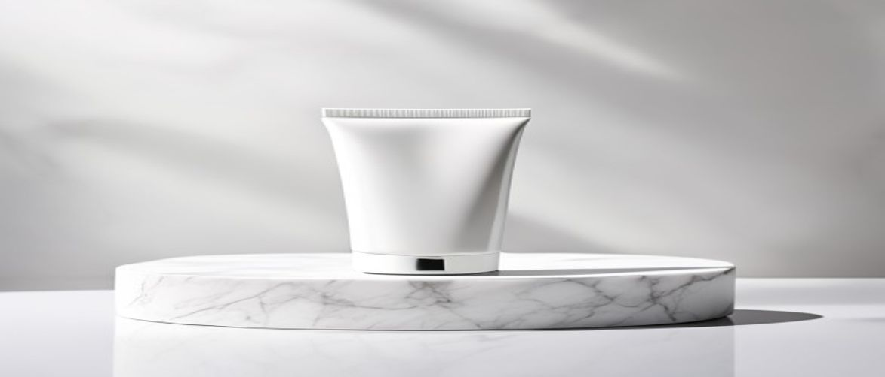

Navigating the vast world of clinical skincare can be challenging, but understanding the right products for your routine is crucial. Today, we're diving deep into whether the popular is clinical face wash lives up to its reputation and what makes it a standout choice for many.
This comprehensive guide will explore the benefits, key ingredients, proper usage, and overall value of this highly regarded cleanser, helping you determine if it's the ideal addition to your professional skincare routine.
The iS Clinical Cleansing Complex is renowned for its advanced clinical formula, designed to provide a thorough yet gentle cleanse. This exceptional product targets multiple skin concerns, ensuring a refreshed and refined complexion without stripping the skin's vital moisture.
The iS Clinical Cleansing Complex is a versatile product suitable for a wide range of skin types, including normal, oily, combination, and even hypersensitive skin. Its gentle yet effective formulation makes it ideal for individuals concerned with acne, aging, hyperpigmentation, or those simply seeking a high-quality, medical-grade skincare cleanser.
It's particularly beneficial for those looking to improve skin texture and clarity without harsh irritation. Clinical studies often highlight products with these ingredients for their efficacy across diverse dermatological needs.
Understanding the science behind the iS Clinical Cleansing Complex reveals why it's considered a cornerstone in many professional skincare routines. Its blend of active botanicals and acids works synergistically to deliver comprehensive benefits, reinforcing the skin barrier and promoting overall skin health.
| Ingredient / Feature | Skin Benefit / Scent Role |
|---|---|
| Salicylic Acid (BHA) | Deeply cleanses pores, exfoliates, reduces acne and oiliness. |
| Glycolic Acid (AHA) | Exfoliates dead skin cells, brightens, improves skin texture. |
| White Willow Bark Extract | Natural source of salicylic acid, anti-inflammatory, soothes skin. |
| Sugarcane Extract | Natural source of glycolic acid, gentle exfoliant, enhances cell turnover. |
| Chamomile Flower Extract | Calms and soothes irritated skin, reduces redness. |
| Centella Asiatica (Gotu Kola) | Promotes wound healing, stimulates collagen, antioxidant. |
Salicylic acid is a beta-hydroxy acid (BHA) renowned for its ability to penetrate oil and exfoliate inside the pore. This makes it exceptionally effective at dissolving sebum and dead skin cells that can lead to breakouts. It helps to clear existing blemishes and prevent new ones from forming.
Dermatologists frequently recommend salicylic acid for its anti-inflammatory properties and its unique ability to decongest pores, making it a powerful ally against acne and blackheads.
Glycolic acid, an alpha-hydroxy acid (AHA) derived from sugarcane, works on the skin's surface to gently exfoliate dead cells. It helps to break the bonds between skin cells, allowing for easier shedding and revealing brighter, smoother skin underneath. This ingredient is key for improving skin texture and reducing the appearance of fine lines.
To maximize the efficacy of your iS Clinical Cleansing Complex, it's essential to incorporate it correctly into your daily skincare regimen. Following these steps will ensure you achieve optimal cleansing and prepare your skin for subsequent treatments.
While using your iS Clinical face wash, resist the urge to over-cleanse or use excessively hot water, as both can strip your skin of its natural oils and compromise the skin barrier. Additionally, ensure you rinse thoroughly; leftover product can lead to irritation or residue buildup.
Always perform a patch test on a small area of skin before incorporating any new product into your routine, especially if you have hypersensitive skin.
Like any advanced skincare product, the iS Clinical Cleansing Complex offers a range of benefits alongside a few considerations. Weighing these factors will help you make an informed decision about integrating it into your regimen.
Understanding common queries about the iS Clinical Cleansing Complex can further clarify its benefits and usage. Here are answers to some of the most frequently asked questions.
Yes, the iS Clinical Cleansing Complex is formulated to be gentle enough for many sensitive skin types, despite containing active exfoliating ingredients. Its balanced blend includes soothing botanicals like chamomile, which helps to mitigate potential irritation. However, always perform a patch test if you have extremely hypersensitive skin.
For most skin types, using the iS Clinical face wash once or twice daily is recommended. If you have particularly sensitive skin or are new to exfoliating cleansers, start with once a day or every other day to allow your skin to adjust. Observe your skin's reaction and adjust frequency accordingly.
Absolutely. The presence of salicylic acid, a beta-hydroxy acid, makes this face wash highly effective in addressing acne concerns. It penetrates oil to exfoliate inside the pores, helping to clear existing breakouts and prevent new ones by reducing congestion and inflammation. This clinical formula is a powerful tool against blemishes.
The iS Clinical face wash is considered medical-grade due to its high concentration of active, pharmaceutical-grade ingredients and its formulation based on extensive scientific research and clinical trials. These products are often developed by scientists and physicians, offering targeted results beyond typical cosmetic formulations, making it a trusted part of a professional skincare routine.
Considering its potent blend of active ingredients, dermatologist-tested formula, and impressive user testimonials, the is clinical face wash stands out as a highly effective and versatile cleanser. It offers much more than just basic cleansing, providing gentle exfoliation, pore refinement, and antioxidant protection, all while supporting your skin barrier. For those seeking a medical-grade product that delivers tangible results in improving skin texture and clarity, it represents a worthy investment.
Elevate your skincare regimen and experience a noticeable difference in your complexion today.
Have questions or a comment on the post? Send us a message and we will get back to you soon.